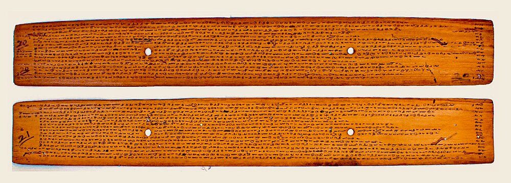
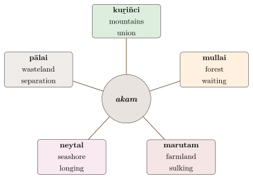

Chapter 10: The Tolkāppiyam: Tamil Grammar and Poetics¶
akara mutala eḻuttellām āti
pakavaṉ mutaṟṟē ulaku
As the letter a is the first of all letters, so the world has the primal Lord as its first.
— Tirukkuṟaḷ 1
10.1 Introduction¶
Beside the Sanskrit tradition, India possesses a second ancient tradition of grammatical analysis, that of Tamil. Its foundational text, the Tolkāppiyam, attributed to Tolkāppiyar, is traditionally regarded as the oldest surviving work of Tamil literature, although only its earliest layers may be as old as the oldest Caṅkam poems; it is the earliest grammar of any Dravidian language. It knows the Sanskrit tradition and uses some of its ideas, but it builds a framework of its own, suited to a language of a quite different family and type, and it extends grammar to include a theory of poetry (Zvelebil 1973, 1992). This chapter is devoted to the Tolkāppiyam itself; the later grammars of Tamil and of the other Dravidian languages, and the discovery of the Dravidian family, are the subject of Chapter 11.
10.2 Author, Date and Layers¶
Nothing certain is known of Tolkāppiyar. The preface (pāyiram) to the work, attributed to his fellow-student Paṉampāraṉār, says that it was presented in the assembly of a Pāṇṭiya king called Nilantaru Tiruviṉ Pāṇṭiyaṉ, before the scholar Ataṅkōṭṭāciriyar, and describes Tolkāppiyar as “full of the Aindra”, that is, versed in the Aindra school of Sanskrit grammar, a tradition known by name but not otherwise preserved. Later commentators made him a disciple of the sage Agastya.
The date of the Tolkāppiyam is much debated, and the work is almost certainly layered. Many scholars place the core of its first two books, on sounds and words, in the last centuries BCE or the early centuries CE; the third book, the Poruḷatikāram, which presupposes a developed body of Caṅkam poetry, is generally considered a later layer, perhaps of the 4th–5th century CE (Zvelebil 1973; Takahashi 1995). Some scholars date the whole work later still. Much earlier dates, reaching back many centuries or even millennia before the Common Era, are sometimes asserted in popular writing; they rest on a medieval legend of three successive Tamil academies (caṅkam) at Madurai, lasting thousands of years (Section 11.2), rather than on evidence.
10.3 Structure¶
The Tolkāppiyam consists of three books (atikāram), each of nine chapters (iyal), in the short verse lines called nūṟpā. See Table 10.1.
| Book | Name | Rules | Subject |
|---|---|---|---|
| I | Eḻuttatikāram | 483 | “Letters”: the sounds of Tamil, their classification, distribution and combination (sandhi) |
| II | Collatikāram | 463 | “Words”: word classes, gender, case, the verb, syntax and usage |
| III | Poruḷatikāram | 656 | “Subject-matter”: the themes and conventions of poetry, prosody and rhetoric |
The commentaries are essential for understanding the text. The oldest complete one is that of Iḷampūraṇar (perhaps 11th–12th century); others are by Cēṉāvaraiyar (on the second book), Pērāciriyar and Nacciṉārkkiṉiyar (14th century).
10.4 The Book of Letters (Eḻuttatikāram)¶
10.4.1 The sounds of Tamil¶
The Tolkāppiyam recognises thirty primary “letters” (mutaleḻuttu): twelve vowels (uyir, “life”) and eighteen consonants (mey, “body”), together with three dependent sounds (cārpeḻuttu): the āytam (written with three dots, transliterated ḵ), and the shortened i and u (kuṟṟiyalikaram, kuṟṟiyalukaram) that occur in certain positions. A consonant combined with a vowel forms a syllable (uyirmey, “life-body”). The very first rule of the work states this count: the letters, it says, are thirty, running from a to ṉ, apart from the three that occur only in dependence on others. The order from a to ṉ is the traditional Tamil order of the letters, which, like the Sanskrit order, begins with the vowels and arranges the consonants partly by class (Table 10.2).
| Class | Tamil term | Sounds |
|---|---|---|
| Short vowels | kuṟil | a, i, u, e, o |
| Long vowels | neṭil | ā, ī, ū, ē, ai, ō, au |
| “Hard” consonants (stops) | valliṉam | k, c, ṭ, t, p, ṟ |
| “Soft” consonants (nasals) | melliṉam | ṅ, ñ, ṇ, n, m, ṉ |
| “Middle” consonants | iṭaiyiṉam | y, r, l, v, ḻ, ḷ |
| Dependent sounds | cārpeḻuttu | āytam (ḵ); shortened i and u |
The analysis fits Tamil closely. Tamil distinguishes short and long e and o, which Sanskrit does not; it has no separate voiced or aspirated stops, the voiced pronunciations of k, c, ṭ, t, p being predictable from their position; and it has the retroflex approximant ḻ and the alveolar ṟ and ṉ, which Sanskrit lacks. The threefold grouping of the consonants into hard, soft and middle classes is the basis of the rules of combination.
10.4.2 Combination (puṇarcci)¶
Much of the first book deals with the changes that take place when words or morphemes combine (puṇarcci, “union”). The Tolkāppiyam distinguishes combination without change (iyalpu) from combination with change (tiripu), and describes the insertion, deletion and alteration of sounds at the junction. The doubling of an initial hard consonant after certain words, characteristic of Tamil, is one of its central topics.
10.5 The Book of Words (Collatikāram)¶
10.5.1 Word classes¶
The Tolkāppiyam divides words into four classes (Table 10.3).
| Tamil term | Approximate equivalent | Description |
|---|---|---|
| peyar | noun | Names, including pronouns; inflected for case |
| viṉai | verb | Words expressing action, inflected for tense and person |
| iṭai | particle | “Intermediate” words: case markers, connectives, clitics |
| uri | qualifier | “Proper” words, mostly qualitative roots used to qualify nouns and verbs |
The fourfold division recalls Yāska’s four classes (noun, verb, preverb, particle; Chapter 4), and the Tolkāppiyam may have been influenced by the Sanskrit tradition. But the classes are not the same: Tamil has no preverbs, and the uri class has no exact Sanskrit counterpart.
10.5.2 Gender: “high” and “non-high” class¶
One of the most distinctive features of Tamil grammar, clearly described in the Tolkāppiyam, is the division of nouns into two classes: uyartiṇai (“high class”), comprising human beings (and gods), and aḵṟiṇai (“non-high class”), comprising everything else. Within the high class, verbs and pronouns distinguish masculine, feminine and plural; within the non-high class, singular and plural. Grammatical gender in Tamil thus follows meaning, unlike gender in Sanskrit, where “wife” may be masculine (dāra) or neuter (kalatra).
10.5.3 Case¶
The Tolkāppiyam recognises eight cases (vēṟṟumai), numbered like the Sanskrit cases and including the vocative, but expressed by suffixes attached to an invariant stem (Table 10.4).
| No. | Name | Marker | Function |
|---|---|---|---|
| 1 | eḻuvāy | – (bare stem) | Subject |
| 2 | second case | -ai | Object |
| 3 | third case | -oṭu, -āṉ | Accompaniment; instrument |
| 4 | fourth case | -ku | Recipient, purpose |
| 5 | fifth case | -iṉ | Source, comparison |
| 6 | sixth case | -atu | Possession |
| 7 | seventh case | -kaṇ | Location |
| 8 | viḷi | change of the final | Address |
Modern Tamil uses different markers for several cases (instrumental -āl, locative -il, ablative -iliruntu), developed after the period of the Tolkāppiyam. Because Tamil suffixes are added to a stem one after another without fusing with it, Tamil morphology is described as agglutinative, in contrast with the fusional morphology of Sanskrit.
10.5.4 The verb¶
The Tamil verb is formed by adding to the stem a tense marker and then a suffix of person, number and gender: paṭi-tt-āṉ “he studied”, paṭi-pp-āṉ “he will study”. (The modern present-tense marker -kiṟ-, as in paṭi-kkiṟ-āṉ “he studies”, is a later development: Old Tamil verb forms mark only past and non-past, although the Tolkāppiyam names three times, past, present and future.) The Tolkāppiyam also describes the participles (eccam) that stand where other languages use relative clauses, and the verbal forms that end a sentence (muṟṟu).
10.5.5 Tamil and Sanskrit grammatical terms¶
The Tamil tradition has its own technical vocabulary, partly parallel to the Sanskrit one. Some correspondences are close; others hide real differences of analysis (Table 10.5).
| Tamil | Sanskrit | Notes |
|---|---|---|
| eḻuttu | varṇa, akṣara | “Letter”: both sound and written sign |
| uyir | svara | Vowel (“life”) |
| mey | vyañjana | Consonant (“body”) |
| col | pada, śabda | Word |
| poruḷ | artha | Meaning; subject-matter |
| peyar | nāman | Noun |
| viṉai | kriyā, ākhyāta | Verb, action |
| vēṟṟumai | vibhakti | Case (“difference”) |
| puṇarcci | sandhi | Combination of sounds |
| tiṇai | no exact equivalent | Class of nouns (uyartiṇai, aḵṟiṇai); also poetic situation |
10.6 The Book of Subject-Matter (Poruḷatikāram)¶
The third book, which as noted is probably a later layer, makes the Tolkāppiyam unusual among grammars: it is a theory of poetry. It divides poetic subject-matter into akam (“interior”), the poetry of love, and puṟam (“exterior”), the poetry of war, kingship, generosity and death. The conventions it describes are those of the anthologies of Caṅkam poetry (Zvelebil 1973; Ramanujan 1967), whose literature is treated in Volume 8, Kāvya Kalpalatā; this chapter is concerned with the theory.
The poems to which these conventions apply are preserved in two great collections, together known as the Caṅkam (or Saṅgam) literature: the “Eight Anthologies” (Eṭṭuttokai), which include the Kuṟuntokai, Naṟṟiṇai, Akanāṉūṟu, Aiṅkuṟunūṟu and Kalittokai (love poetry) and the Puṟanāṉūṟu and Patiṟṟuppattu (heroic poetry), and the “Ten Songs” (Pattuppāṭṭu), longer poems. Most of the poems are generally dated to the first three centuries CE, though the collections were compiled later. They were largely forgotten for centuries and were rediscovered and printed in the late 19th century, above all through the work of U. Vē. Cāminātaiyar, who searched out and edited the palm-leaf manuscripts (Figure 10.1). Eva Wilden has traced how fragile that transmission was, and how much of the Caṅkam corpus survived in only a handful of copies (Zvelebil 1973; Wilden 2014).

,_Languages_in_the_manuscript_Tamil_Telugu_Sanskrit,_Scripts_Grantha_Telugu_Tamil,_Hindu_Shaivism_monastery,_UVSL_589.jpg){kind=link}
Scholarly Note: Gender and caste in the Poruḷatikāram
The Poruḷatikāram codifies a poetic world with clear social boundaries. Its rules specify which characters may speak in which situations: the heroine, her friend, her foster-mother, the hero and his companions, the courtesan. It discusses marriage and assigns different conventions to different social groups, and it reserves some situations for particular classes of people. Readers should not treat the idealised world of the conventions as a description of early Tamil society, and recent scholarship has emphasised the ways in which these conventions represent women’s voices through male authorship (Zvelebil 1992; Takahashi 1995).
10.6.1 The landscapes of love (tiṇai)¶
Love poetry is organised by tiṇai, “situations” or “landscapes”. Five of them are the core of the system; each pairs a phase of love with a landscape, a season and time of day, and a characteristic flower, from which it takes its name. The Tolkāppiyam adds two further tiṇais, kaikkiḷai (one-sided love) and peruntiṇai (mismatched or improper love), making seven (Table 10.6).
| Tiṇai | Landscape | Phase of love | Time |
|---|---|---|---|
| kuṟiñci | mountains | union of lovers | midnight; cold season |
| mullai | forest, pasture | patient waiting | evening; rainy season |
| marutam | riverine farmland | sulking, quarrels over infidelity | dawn |
| neytal | seashore | anxious longing | sunset |
| pālai | parched wasteland | separation, elopement | midday; summer |
Each landscape has its “native elements” (karupporuḷ): gods, people, animals, birds, plants, occupations and music. A poem need not state its emotion: the mention of, say, a flower or a bird of a particular landscape is enough to evoke the situation. The Tolkāppiyam also discusses uḷḷuṟai, implied comparison through such natural details, and iṟaicci, suggestion. These ideas have been compared with the theory of suggestion (dhvani) developed later in Sanskrit poetics; the comparison is illuminating, but there is no evidence of direct influence in either direction (Figure 10.2).

10.6.2 The poetry of the exterior (puṟam)¶
The Tolkāppiyam classifies heroic poetry into seven puṟam tiṇais, each paired with one of the seven akam tiṇais. A later treatise, the Puṟapporuḷ Veṇpāmālai, has a different and larger scheme, in which the defence of cattle (karantai) and the defence of a fort (nocci) appear as separate themes (Table 10.7).
| Puṟam tiṇai | Theme | Paired with |
|---|---|---|
| veṭci | cattle raid | kuṟiñci |
| vañci | invasion, the march to war | mullai |
| uḻiñai | siege of a fort | marutam |
| tumpai | pitched battle | neytal |
| vākai | victory | pālai |
| kāñci | the transience of life | peruntiṇai |
| pāṭāṇ | praise of a patron | kaikkiḷai |
10.7 Tamil Prosody (yāppu)¶
The Poruḷatikāram includes a chapter on prosody (Ceyyuḷiyal), and later treatises such as the Yāpparuṅkalam and its abridgement, the Yāpparuṅkalakkārikai, developed the subject. Tamil prosody is independent of Sanskrit metre. Its basic unit is the acai, a group of one or two syllables of a particular weight (nēr or nirai); acais combine to form the metrical foot (cīr), feet form the line (aṭi), and the links between feet are governed by rules of connection (taḷai). Ornamentation by alliteration of initial sounds (mōṉai) and by second-syllable rhyme (etukai), collectively toṭai, is an essential feature.
The classical verse forms include the āciriyappā (akaval), the flexible metre of most Caṅkam poetry; the veṇpā, a strict and concise form, used for example in the couplets of the Tirukkuṟaḷ; the kalippā, associated with dramatic and dialogue poems; and the vañcippā. Kannada and Telugu developed prosodic systems that combine Sanskrit metres with indigenous Dravidian forms, such as the Kannada ṣaṭpadi and the Telugu dvipada.
10.8 Tamil and Sanskrit in the Tolkāppiyam¶
Tamil and Sanskrit have been in contact for more than two thousand years. The Tolkāppiyam itself has rules for adapting Sanskrit words (vaṭacol, “northern words”) to Tamil sounds, and Caṅkam poetry already contains Sanskrit and Prakrit loanwords. The first couplet of the Tirukkuṟaḷ, a collection of aphorisms probably of the mid-1st millennium CE, quoted at the head of this chapter, shows both the Tamil theory of letters and the adaptation of Sanskrit words. It opens with the first letter, a, as the Tolkāppiyam orders them, and it is in the strict kuṟaḷ veṇpā form of four feet followed by three. Its words āti and pakavaṉ are Sanskrit ādi “first” and bhagavān “lord”, reshaped to fit Tamil phonology, which has no separate letters for voiced or aspirated stops.
The relationship grew closer in the medieval period, when Tamil grammarians began to describe their language through Sanskrit categories and some argued that Tamil grammar depended on Sanskrit, while others insisted on its independence. That debate, and its modern sequel in the discovery of the Dravidian family, the Tamil revival and the politics of language, are followed in Chapter 11. Both the debt of Tamil to Sanskrit and the debt of Sanskrit to the Dravidian languages are real, and modern scholarship tries to describe them without the polemics of either side (Krishnamurti 2003).
10.9 The Living Tradition¶
The Tolkāppiyam holds a special place in modern Tamil culture as a symbol of the antiquity and independence of Tamil. In the 20th century the Tamil revival movement, and the politics of language in Tamil Nadu, gave it renewed public prominence (Ramaswamy 1997). In 2004 Tamil became the first language to be declared a “classical language” by the Government of India.
Further Reading¶
-
Zvelebil, Kamil V. 1973. The Smile of Murugan: On Tamil Literature of South India. E. J. Brill.. — On classical Tamil literature and poetics.
-
Zvelebil, Kamil V. 1992. Companion Studies to the History of Tamil Literature. E. J. Brill.. — On the Tolkāppiyam and its chronology.
-
Takahashi, Takanobu. 1995. Tamil Love Poetry and Poetics. E. J. Brill.. — On Tamil love poetry and its theory.
-
Ramanujan, A. K. 1967. The Interior Landscape: Love Poems from a Classical Tamil Anthology. Indiana University Press.. — Translations that convey the tiṇai conventions.
-
Krishnamurti, Bhadriraju. 2003. The Dravidian Languages. Cambridge University Press.. — The standard comparative account of the Dravidian family.
-
Ramaswamy, Sumathi. 1997. Passions of the Tongue: Language Devotion in Tamil India, 1891–1970. University of California Press.. — On Tamil language devotion in the modern period.
-
Wilden, Eva. 2014. Manuscript, Print and Memory: Relics of the Caṅkam in Tamilnadu. Studies in Manuscript Cultures 3. De Gruyter.. — On the manuscripts of the Caṅkam texts and their rediscovery.